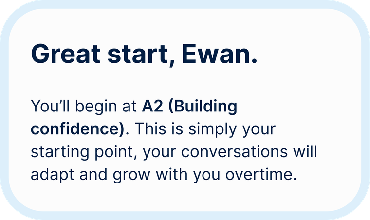
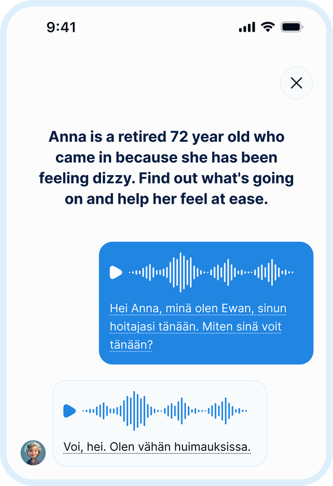
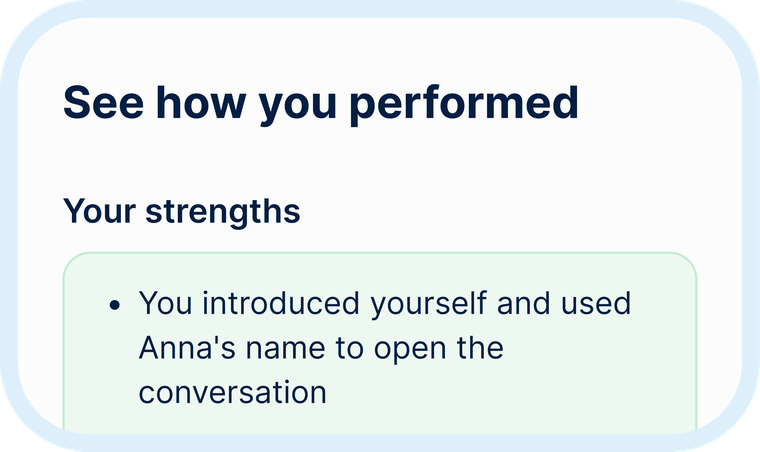

The patient who wants to be understood
Something's wrong, and they don't know what. Juuri helps you take their history, explain next steps, and respond to their concerns with real clarity.
Practice clinical communication before placement, before your first shift, or whenever you need it most.

Because practice turns knowledge into confidence. Real clinical conversations ask you to listen, respond, reassure, explain, and adapt in the moment. Juuri helps you put what you've learned into practice through contextualized conversations, so you feel more prepared when it matters.
Build confidence across a range of clinical conversations. Here's who you'll be talking to:
Something's wrong, and they don't know what. Juuri helps you take their history, explain next steps, and respond to their concerns with real clarity.
They're relying on you to pass along exactly what they need to know. Practice handovers, quick questions, and the everyday exchanges that keep a shift running smoothly with Juuri.
They're holding onto every word. Use Juuri to learn how to explain care clearly and compassionately to the people who matter most to your patients.
No overwhelming lesson plans, just a clear path from where you are to where you need to be.

Have a short conversation with a virtual patient to helps us understand where you're starting from.

Practice real clinical moments through natural back and forth conversations in Finnish.

Get personalised reports on what went well, what could be better, and tips on how to improve.
No, Juuri isn't about perfect conversations. It's a place to practice, make mistakes, reflect on your responses, and keep improving over time. Every conversation is another opportunity to build confidence.
Most sessions run five to ten minutes, short enough to fit between shifts or study blocks, but long enough for a full conversation.
No. You can practice by voice or by typing, whichever feels right for the moment you're in.
Yes, replay any scenario as many times as you like. Each attempt adapts slightly so it never feels rote.
You'll need a free account to save your progress and pick up where you left off, but you can preview a scenario without one.